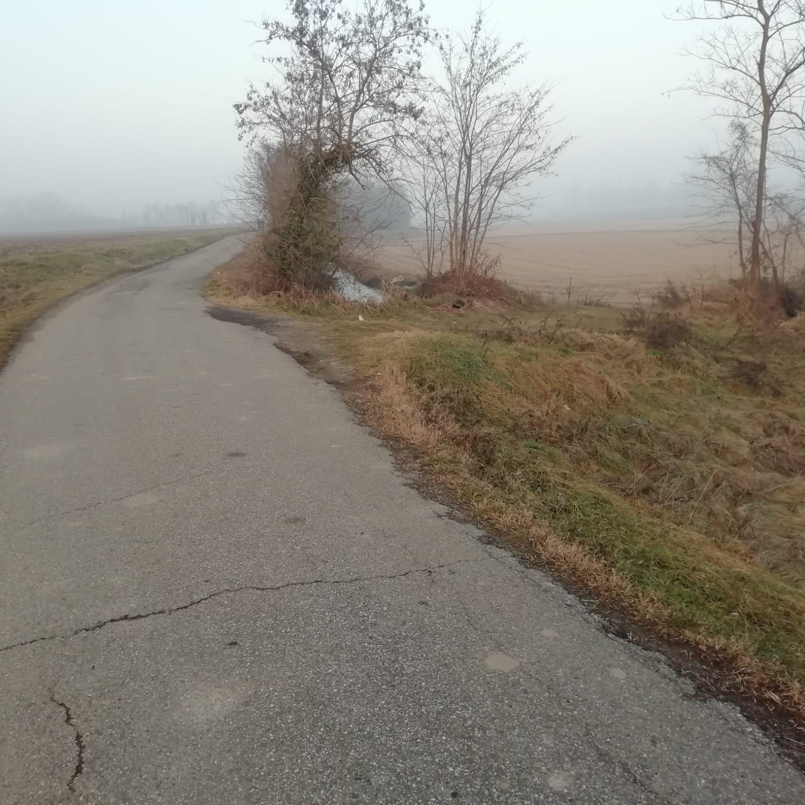
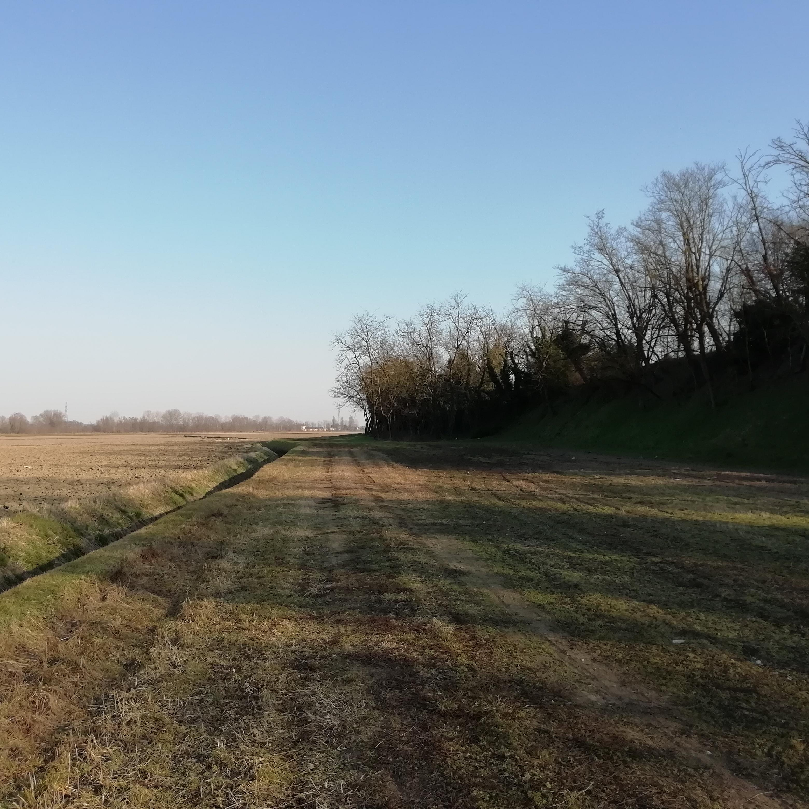
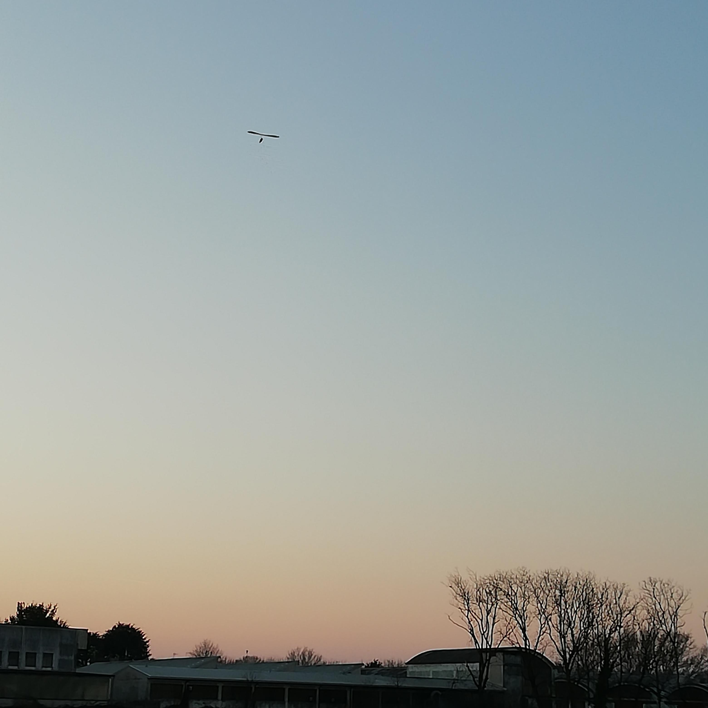
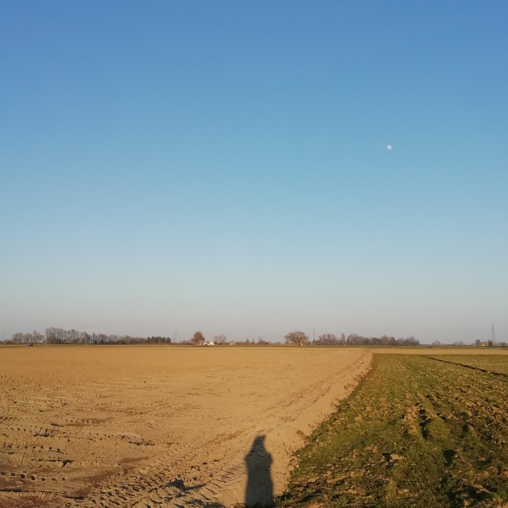
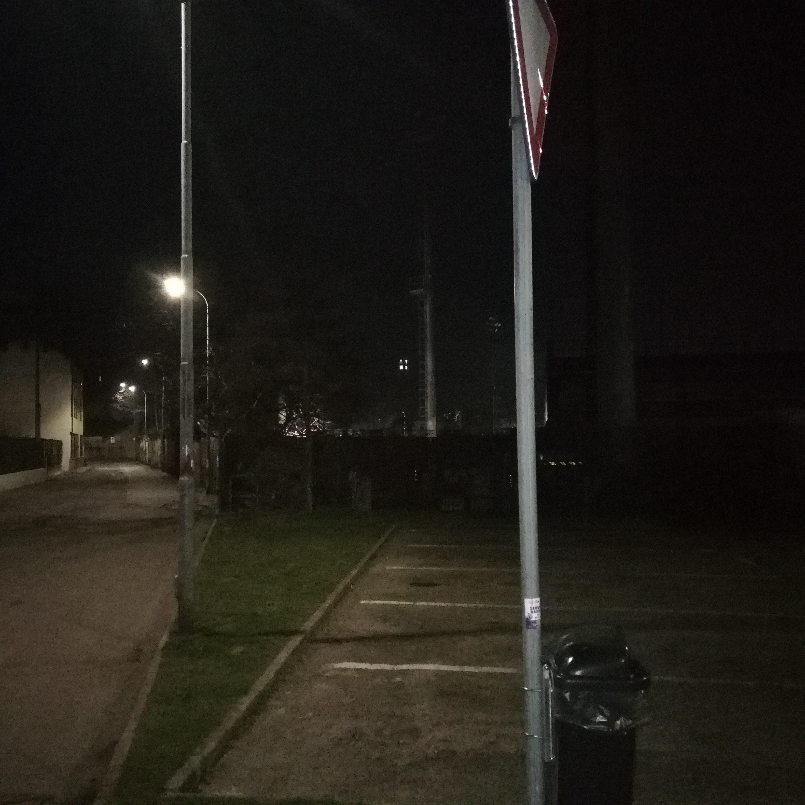

<!DOCTYPE html>
<head>
    <meta http-equiv="content-type" content="text/html; charset=UTF-8" />

        <script>
            L_NO_TOUCH = false;
            L_DISABLE_3D = false;
        </script>

    <style>html, body {width: 100%;height: 100%;margin: 0;padding: 0;}</style>
    <style>#map {position:absolute;top:0;bottom:0;right:0;left:0;}</style>
<script src="https://cdn.jsdelivr.net/npm/leaflet@1.6.0/dist/leaflet.js"></script>
<link rel="stylesheet" href="lib/EasyButton-master/src/easy-button.css">
<script src="lib/EasyButton-master/src/easy-button.js"></script>
    <script src="https://code.jquery.com/jquery-1.12.4.min.js"></script>
    <script src="https://maxcdn.bootstrapcdn.com/bootstrap/3.2.0/js/bootstrap.min.js"></script>
    <script src="https://cdnjs.cloudflare.com/ajax/libs/Leaflet.awesome-markers/2.0.2/leaflet.awesome-markers.js"></script>
    <link rel="stylesheet" href="https://cdn.jsdelivr.net/npm/leaflet@1.6.0/dist/leaflet.css"/>
    <link rel="stylesheet" href="https://maxcdn.bootstrapcdn.com/bootstrap/3.2.0/css/bootstrap.min.css"/>
    <link rel="stylesheet" href="https://maxcdn.bootstrapcdn.com/bootstrap/3.2.0/css/bootstrap-theme.min.css"/>
    <link rel="stylesheet" href="https://maxcdn.bootstrapcdn.com/font-awesome/4.6.3/css/font-awesome.min.css"/>
    <link rel="stylesheet" href="https://cdnjs.cloudflare.com/ajax/libs/Leaflet.awesome-markers/2.0.2/leaflet.awesome-markers.css"/>
    <link rel="stylesheet" href="https://cdn.jsdelivr.net/gh/python-visualization/folium/folium/templates/leaflet.awesome.rotate.min.css"/>

            <meta name="viewport" content="width=device-width,
                initial-scale=1.0, maximum-scale=1.0, user-scalable=no" />
            <style>
                #map_82823b01498c4b1bbb1dcf80eb564d6d {
                    position: relative;
                    width: 100.0%;
                    height: 100.0%;
                    left: 0.0%;
                    top: 0.0%;
                }
            </style>

</head>
<body>

            <div class="folium-map" id="map_82823b01498c4b1bbb1dcf80eb564d6d" ></div>

</body>
<script>

            var map_82823b01498c4b1bbb1dcf80eb564d6d = L.map(
                "map_82823b01498c4b1bbb1dcf80eb564d6d",
                {
                    center: [45.317245, 8.858102],
                    crs: L.CRS.EPSG3857,
                    maxBounds: [[45.151245, 8.692102], [45.483245, 9.024102000000001]],
                    zoom: 12,
                    zoomControl: false,
                    preferCanvas: false,
                }
            );


            var tile_layer_08feb7c84da4486a91ff88b3b2c20140 = L.tileLayer(
                "https://tile.thunderforest.com/landscape/{z}/{x}/{y}.png?apikey=3dc24c77246845e5b1c941baf227ba56",
                {"attribution": "\u0026copy; \u003ca href=\"http://www.thunderforest.com/\"\u003eThunderforest\u003c/a\u003e, \u0026copy; \u003ca href=\"https://www.openstreetmap.org/copyright\"\u003eOpenStreetMap\u003c/a\u003e contributors", "detectRetina": false, "maxNativeZoom": 18, "maxZoom": 18, "minZoom": 12, "noWrap": false, "opacity": 1, "subdomains": "abc", "tms": false}
            ).addTo(map_82823b01498c4b1bbb1dcf80eb564d6d);


            var marker_f22105bc9c7a48638a6ddb1cfe524b1f = L.marker(
                [45.3230625, 8.850245651],
                {}
            ).addTo(map_82823b01498c4b1bbb1dcf80eb564d6d);


        var custom_icon_296e67629c4f4c6d8b4578e00b2d9ccb = L.icon({"iconSize": [30, 30], "iconUrl": "https://emojipedia-us.s3.dualstack.us-west-1.amazonaws.com/thumbs/160/microsoft/74/motor-scooter_1f6f5.png "});
        marker_f22105bc9c7a48638a6ddb1cfe524b1f.setIcon(custom_icon_296e67629c4f4c6d8b4578e00b2d9ccb);


        var popup_6608f208ee4443f79da6685995080c3b = L.popup({"maxWidth": "270"});


            var html_75bcff16d28040299525f9f4396f1d03 = $(`<div id="html_75bcff16d28040299525f9f4396f1d03" style="width: 100.0%; height: 100.0%;"><h1 style = "font-size: 30px;"><b>Pizzeria</b></h1><br>PLACEHOLDER<br><a href="mailto:info@ecologiaacustica.org?subject=PAESAGGIO SONORO - Pizzeria"><i><br>Facci sapere cosa ne pensi di questo posto!</a><audio id="audio_GU_VIALE_MONTEGRAPPA_PIZZERIA" loop> <source src="dati/GU_VIALE_MONTEGRAPPA_PIZZERIA/pizzeria.mp3" type="audio/mpeg"> </audio></div>`)[0];
            popup_6608f208ee4443f79da6685995080c3b.setContent(html_75bcff16d28040299525f9f4396f1d03);


        marker_f22105bc9c7a48638a6ddb1cfe524b1f.bindPopup(popup_6608f208ee4443f79da6685995080c3b)
marker_f22105bc9c7a48638a6ddb1cfe524b1f.on('click', function (e) {this.openPopup(); document.getElementById('audio_GU_VIALE_MONTEGRAPPA_PIZZERIA').play();});
        ;


            var marker_9b914a2593504c3dadf46c8655a8ad07 = L.marker(
                [45.31211904, 8.860001045],
                {}
            ).addTo(map_82823b01498c4b1bbb1dcf80eb564d6d);


        var custom_icon_a045793491ee4b5b906b27c079e5f5fd = L.icon({"iconSize": [30, 30], "iconUrl": "https://emojipedia-us.s3.dualstack.us-west-1.amazonaws.com/thumbs/160/microsoft/74/water-wave_1f30a.png "});
        marker_9b914a2593504c3dadf46c8655a8ad07.setIcon(custom_icon_a045793491ee4b5b906b27c079e5f5fd);


        var popup_ec6c206cb6324e1abb942084be03d776 = L.popup({"maxWidth": "270"});


            var html_0ae42e0bf2c84814b22b1504e223d946 = $(`<div id="html_0ae42e0bf2c84814b22b1504e223d946" style="width: 100.0%; height: 100.0%;"><h1 style = "font-size: 30px;"><b>Giacchetta Canale</b></h1><br>PLACEHOLDER<br><a href="mailto:info@ecologiaacustica.org?subject=PAESAGGIO SONORO - Giacchetta Canale"><i><br>Facci sapere cosa ne pensi di questo posto!</a><audio id="audio_GU_GIACCHETTA_CANALE" loop> <source src="dati/GU_GIACCHETTA_CANALE/ZOOM0027.mp3" type="audio/mpeg"> </audio></div>`)[0];
            popup_ec6c206cb6324e1abb942084be03d776.setContent(html_0ae42e0bf2c84814b22b1504e223d946);


        marker_9b914a2593504c3dadf46c8655a8ad07.bindPopup(popup_ec6c206cb6324e1abb942084be03d776)
marker_9b914a2593504c3dadf46c8655a8ad07.on('click', function (e) {this.openPopup(); document.getElementById('audio_GU_GIACCHETTA_CANALE').play();});
        ;


            var marker_111844ad71ee4aaf857f80bcf5556abc = L.marker(
                [45.3064081, 8.866924562],
                {}
            ).addTo(map_82823b01498c4b1bbb1dcf80eb564d6d);


        var custom_icon_b55ecf8478244a7faa3f03056dcdb298 = L.icon({"iconSize": [30, 30], "iconUrl": "https://emojipedia-us.s3.dualstack.us-west-1.amazonaws.com/thumbs/60/microsoft/74/umbrella-with-rain-drops_2614.png "});
        marker_111844ad71ee4aaf857f80bcf5556abc.setIcon(custom_icon_b55ecf8478244a7faa3f03056dcdb298);


        var popup_031d11728d604cc8a8d7d8c482e92a09 = L.popup({"maxWidth": "270"});


            var html_83d285668abf4048be51ff46a6634a31 = $(`<div id="html_83d285668abf4048be51ff46a6634a31" style="width: 100.0%; height: 100.0%;"><h1 style = "font-size: 30px;"><b>Via de chirico Canale Pioggia</b></h1><br>PLACEHOLDER<br><a href="mailto:info@ecologiaacustica.org?subject=PAESAGGIO SONORO - Via de chirico Canale Pioggia"><i><br>Facci sapere cosa ne pensi di questo posto!</a><audio id="audio_GU_VIA_DE_CHIRICO_CANALE_v2" loop> <source src="dati/GU_VIA_DE_CHIRICO_CANALE_v2/ZOOM0029.mp3" type="audio/mpeg"> </audio></div>`)[0];
            popup_031d11728d604cc8a8d7d8c482e92a09.setContent(html_83d285668abf4048be51ff46a6634a31);


        marker_111844ad71ee4aaf857f80bcf5556abc.bindPopup(popup_031d11728d604cc8a8d7d8c482e92a09)
marker_111844ad71ee4aaf857f80bcf5556abc.on('click', function (e) {this.openPopup(); document.getElementById('audio_GU_VIA_DE_CHIRICO_CANALE_v2').play();});
        ;


            var marker_9f7ecdbd2eed43f5b8c9f09482f0a919 = L.marker(
                [45.30644102, 8.889899845],
                {}
            ).addTo(map_82823b01498c4b1bbb1dcf80eb564d6d);


        var custom_icon_8b21f5b41b7141bb95ac5919b19c93b2 = L.icon({"iconSize": [30, 30], "iconUrl": "https://emojipedia-us.s3.dualstack.us-west-1.amazonaws.com/thumbs/60/microsoft/74/fallen-leaf_1f342.png "});
        marker_9f7ecdbd2eed43f5b8c9f09482f0a919.setIcon(custom_icon_8b21f5b41b7141bb95ac5919b19c93b2);


        var popup_9683ab37595e41c2a4a3dac5e2087625 = L.popup({"maxWidth": "270"});


            var html_c663be7e3bd44e99a27fb2fd992173e9 = $(`<div id="html_c663be7e3bd44e99a27fb2fd992173e9" style="width: 100.0%; height: 100.0%;"><h1 style = "font-size: 30px;"><b>Strada per laghi di santa marta</b></h1><br>PLACEHOLDER<br><a href="mailto:info@ecologiaacustica.org?subject=PAESAGGIO SONORO - Strada per laghi di santa marta"><i><br>Facci sapere cosa ne pensi di questo posto!</a><audio id="audio_GU_AGRITURISMO_COLDIRETTI" loop> <source src="dati/GU_AGRITURISMO_COLDIRETTI/ZOOM0025.mp3" type="audio/mpeg"> </audio></div>`)[0];
            popup_9683ab37595e41c2a4a3dac5e2087625.setContent(html_c663be7e3bd44e99a27fb2fd992173e9);


        marker_9f7ecdbd2eed43f5b8c9f09482f0a919.bindPopup(popup_9683ab37595e41c2a4a3dac5e2087625)
marker_9f7ecdbd2eed43f5b8c9f09482f0a919.on('click', function (e) {this.openPopup(); document.getElementById('audio_GU_AGRITURISMO_COLDIRETTI').play();});
        ;


            var marker_56691b786ffd4e79b13e9b5d5c10adcf = L.marker(
                [45.29917137, 8.905742693],
                {}
            ).addTo(map_82823b01498c4b1bbb1dcf80eb564d6d);


        var custom_icon_4ee03df93be64511bff6f4d7725414cb = L.icon({"iconSize": [30, 30], "iconUrl": "https://emojipedia-us.s3.dualstack.us-west-1.amazonaws.com/thumbs/160/microsoft/74/bird_1f426.png "});
        marker_56691b786ffd4e79b13e9b5d5c10adcf.setIcon(custom_icon_4ee03df93be64511bff6f4d7725414cb);


        var popup_fd76556f09c741f4adad3866cf3c4b7e = L.popup({"maxWidth": "270"});


            var html_0837587afabe45ad89326fba1d2413ea = $(`<div id="html_0837587afabe45ad89326fba1d2413ea" style="width: 100.0%; height: 100.0%;"><h1 style = "font-size: 30px;"><b>Laghetto dei piccoli</b></h1><br>PLACEHOLDER<br><a href="mailto:info@ecologiaacustica.org?subject=PAESAGGIO SONORO - Laghetto dei piccoli"><i><br>Facci sapere cosa ne pensi di questo posto!</a><audio id="audio_GU_LAGHETTO_DEI_PICCOLI" loop> <source src="dati/GU_LAGHETTO_DEI_PICCOLI/ZOOM0033.mp3" type="audio/mpeg"> </audio></div>`)[0];
            popup_fd76556f09c741f4adad3866cf3c4b7e.setContent(html_0837587afabe45ad89326fba1d2413ea);


        marker_56691b786ffd4e79b13e9b5d5c10adcf.bindPopup(popup_fd76556f09c741f4adad3866cf3c4b7e)
marker_56691b786ffd4e79b13e9b5d5c10adcf.on('click', function (e) {this.openPopup(); document.getElementById('audio_GU_LAGHETTO_DEI_PICCOLI').play();});
        ;


            var marker_2274097822bf4a6c8e043ddc126c753b = L.marker(
                [45.31246512, 8.883821165],
                {}
            ).addTo(map_82823b01498c4b1bbb1dcf80eb564d6d);


        var custom_icon_3315ab9dfc304a6eac4066601b4f2f67 = L.icon({"iconSize": [30, 30], "iconUrl": "https://emojipedia-us.s3.dualstack.us-west-1.amazonaws.com/thumbs/60/microsoft/74/cat_1f408.png "});
        marker_2274097822bf4a6c8e043ddc126c753b.setIcon(custom_icon_3315ab9dfc304a6eac4066601b4f2f67);


        var popup_397c38a5da874a3b874418e2f91a1bdd = L.popup({"maxWidth": "270"});


            var html_fa7780d769f947c2befa7ed78e73108c = $(`<div id="html_fa7780d769f947c2befa7ed78e73108c" style="width: 100.0%; height: 100.0%;"><h1 style = "font-size: 30px;"><b>Miciopolis</b></h1><br>PLACEHOLDER<br><a href="mailto:info@ecologiaacustica.org?subject=PAESAGGIO SONORO - Miciopolis"><i><br>Facci sapere cosa ne pensi di questo posto!</a><audio id="audio_GU_MICIOPOLIS" loop> <source src="dati/GU_MICIOPOLIS/ZOOM0022.mp3" type="audio/mpeg"> </audio></div>`)[0];
            popup_397c38a5da874a3b874418e2f91a1bdd.setContent(html_fa7780d769f947c2befa7ed78e73108c);


        marker_2274097822bf4a6c8e043ddc126c753b.bindPopup(popup_397c38a5da874a3b874418e2f91a1bdd)
marker_2274097822bf4a6c8e043ddc126c753b.on('click', function (e) {this.openPopup(); document.getElementById('audio_GU_MICIOPOLIS').play();});
        ;


            var marker_1219e1047c664cb2b0d244ad34d7e448 = L.marker(
                [45.30433837, 8.883231356],
                {}
            ).addTo(map_82823b01498c4b1bbb1dcf80eb564d6d);


        var custom_icon_503c7efcf0184b0381ce18259e95379c = L.icon({"iconSize": [30, 30], "iconUrl": "https://emojipedia-us.s3.dualstack.us-west-1.amazonaws.com/thumbs/160/microsoft/74/water-wave_1f30a.png "});
        marker_1219e1047c664cb2b0d244ad34d7e448.setIcon(custom_icon_503c7efcf0184b0381ce18259e95379c);


        var popup_9f0bfd0fc66c420c93e6e3adba450df5 = L.popup({"maxWidth": "270"});


            var html_dff79bc66bb245ad84a013cace517d8b = $(`<div id="html_dff79bc66bb245ad84a013cace517d8b" style="width: 100.0%; height: 100.0%;"><h1 style = "font-size: 30px;"><b>Strada per la Sforzesca</b></h1><br><br>PLACEHOLDER<br><a href="mailto:info@ecologiaacustica.org?subject=PAESAGGIO SONORO - Strada per la Sforzesca"><i><br>Facci sapere cosa ne pensi di questo posto!</a><audio id="audio_GU_STRADA_REBUFFI" loop> <source src="dati/GU_STRADA_REBUFFI/ZOOM0024.mp3" type="audio/mpeg"> </audio></div>`)[0];
            popup_9f0bfd0fc66c420c93e6e3adba450df5.setContent(html_dff79bc66bb245ad84a013cace517d8b);


        marker_1219e1047c664cb2b0d244ad34d7e448.bindPopup(popup_9f0bfd0fc66c420c93e6e3adba450df5)
marker_1219e1047c664cb2b0d244ad34d7e448.on('click', function (e) {this.openPopup(); document.getElementById('audio_GU_STRADA_REBUFFI').play();});
        ;


            var marker_0b95ee4cefb846a48014cd4e643a9a8f = L.marker(
                [45.29236968, 8.884778005],
                {}
            ).addTo(map_82823b01498c4b1bbb1dcf80eb564d6d);


        var custom_icon_a557e135a34e43c99678fe796f897b05 = L.icon({"iconSize": [30, 30], "iconUrl": "https://emojipedia-us.s3.dualstack.us-west-1.amazonaws.com/thumbs/60/microsoft/74/fog_1f32b.png "});
        marker_0b95ee4cefb846a48014cd4e643a9a8f.setIcon(custom_icon_a557e135a34e43c99678fe796f897b05);


        var popup_44a35e93d323474b8fc93c8973a8da9e = L.popup({"maxWidth": "270"});


            var html_6ce0756b23da4475ba5f560571847b3a = $(`<div id="html_6ce0756b23da4475ba5f560571847b3a" style="width: 100.0%; height: 100.0%;"><h1 style = "font-size: 30px;"><b>Cimitero musicale</b></h1><br><br>Mi ringrazia. Provo a suonare live sotto il suo suggerimento insieme ad altri amici.<br />Non sapendo suonare mi concentro timidamente sul Re. Rinuncio e chiudo il piano.<br />Il sottofondo è musica ambient e sono attorniato dal mio datore di lavoro.<br><a href="mailto:info@ecologiaacustica.org?subject=PAESAGGIO SONORO - Cimitero musicale"><i><br>Facci sapere cosa ne pensi di questo posto!</a><audio id="audio_GU_STRADA_REBUFFI_v3" loop> <source src="dati/GU_STRADA_REBUFFI_v3/ZOOM0028.mp3" type="audio/mpeg"> </audio></div>`)[0];
            popup_44a35e93d323474b8fc93c8973a8da9e.setContent(html_6ce0756b23da4475ba5f560571847b3a);


        marker_0b95ee4cefb846a48014cd4e643a9a8f.bindPopup(popup_44a35e93d323474b8fc93c8973a8da9e)
marker_0b95ee4cefb846a48014cd4e643a9a8f.on('click', function (e) {this.openPopup(); document.getElementById('audio_GU_STRADA_REBUFFI_v3').play();});
        ;


            var marker_0a756c0e991b45c1a73750bf7724e085 = L.marker(
                [45.34084406, 8.867725439],
                {}
            ).addTo(map_82823b01498c4b1bbb1dcf80eb564d6d);


        var custom_icon_9d63131f001b40eea8f2274014bef002 = L.icon({"iconSize": [30, 30], "iconUrl": "https://emojipedia-us.s3.dualstack.us-west-1.amazonaws.com/thumbs/60/microsoft/74/speaker-with-three-sound-waves_1f50a.png "});
        marker_0a756c0e991b45c1a73750bf7724e085.setIcon(custom_icon_9d63131f001b40eea8f2274014bef002);


        var popup_9c1ed0e47b264a58ada618bdcaf650cc = L.popup({"maxWidth": "270"});


            var html_e5ebce7d9fb442e1a7fc2897f4b304c6 = $(`<div id="html_e5ebce7d9fb442e1a7fc2897f4b304c6" style="width: 100.0%; height: 100.0%;"><h1 style = "font-size: 30px;"><b>Rave a Ticino</b></h1><br><br>PLACEHOLDER<br><a href="mailto:info@ecologiaacustica.org?subject=PAESAGGIO SONORO - Rave a Ticino"><i><br>Facci sapere cosa ne pensi di questo posto!</a><audio id="audio_GU_RAVE_TISIN_v1" loop> <source src="dati/GU_RAVE_TISIN_v1/ZOOM0025.mp3" type="audio/mpeg"> </audio></div>`)[0];
            popup_9c1ed0e47b264a58ada618bdcaf650cc.setContent(html_e5ebce7d9fb442e1a7fc2897f4b304c6);


        marker_0a756c0e991b45c1a73750bf7724e085.bindPopup(popup_9c1ed0e47b264a58ada618bdcaf650cc)
marker_0a756c0e991b45c1a73750bf7724e085.on('click', function (e) {this.openPopup(); document.getElementById('audio_GU_RAVE_TISIN_v1').play();});
        ;


            var marker_b61938d6b0cf434aad729ab80ae71bd9 = L.marker(
                [45.34220987, 8.865593442],
                {}
            ).addTo(map_82823b01498c4b1bbb1dcf80eb564d6d);


        var custom_icon_bfc7446f0db24bea940269a3a60c7804 = L.icon({"iconSize": [30, 30], "iconUrl": "https://emojipedia-us.s3.dualstack.us-west-1.amazonaws.com/thumbs/160/microsoft/74/water-wave_1f30a.png "});
        marker_b61938d6b0cf434aad729ab80ae71bd9.setIcon(custom_icon_bfc7446f0db24bea940269a3a60c7804);


        var popup_dbe5e90a122548d7b952476d474efb71 = L.popup({"maxWidth": "270"});


            var html_e83ff4d0986d497e9bd167c8099b7594 = $(`<div id="html_e83ff4d0986d497e9bd167c8099b7594" style="width: 100.0%; height: 100.0%;"><h1 style = "font-size: 30px;"><b>Acqua dolce e cassa dritta</b></h1><br><br>PLACEHOLDER<br><a href="mailto:info@ecologiaacustica.org?subject=PAESAGGIO SONORO - Acqua dolce e cassa dritta"><i><br>Facci sapere cosa ne pensi di questo posto!</a><audio id="audio_GU_RAVE_TISIN_v3" loop> <source src="dati/GU_RAVE_TISIN_v3/ZOOM0028.mp3" type="audio/mpeg"> </audio></div>`)[0];
            popup_dbe5e90a122548d7b952476d474efb71.setContent(html_e83ff4d0986d497e9bd167c8099b7594);


        marker_b61938d6b0cf434aad729ab80ae71bd9.bindPopup(popup_dbe5e90a122548d7b952476d474efb71)
marker_b61938d6b0cf434aad729ab80ae71bd9.on('click', function (e) {this.openPopup(); document.getElementById('audio_GU_RAVE_TISIN_v3').play();});
        ;


            var marker_8a99363725b74ddb81556ebc805470d8 = L.marker(
                [45.34300948, 8.862928168],
                {}
            ).addTo(map_82823b01498c4b1bbb1dcf80eb564d6d);


        var custom_icon_9cd3ebd8283140a0b3e266ab8f918560 = L.icon({"iconSize": [30, 30], "iconUrl": "https://emojipedia-us.s3.dualstack.us-west-1.amazonaws.com/thumbs/160/microsoft/74/bird_1f426.png "});
        marker_8a99363725b74ddb81556ebc805470d8.setIcon(custom_icon_9cd3ebd8283140a0b3e266ab8f918560);


        var popup_ff26bf18373a493396269cca6ae82464 = L.popup({"maxWidth": "270"});


            var html_5d3095104cdb4687be224d68145b17c1 = $(`<div id="html_5d3095104cdb4687be224d68145b17c1" style="width: 100.0%; height: 100.0%;"><h1 style = "font-size: 30px;"><b>Birds of Rocca Petrella</b></h1><br><br>Qua si sente bene<br /><br />Avrei voluto scendere ma non era possibile a causa di una stramaledetta proprietà privata<br /><br />Tantè<br><a href="mailto:info@ecologiaacustica.org?subject=PAESAGGIO SONORO - Birds of Rocca Petrella"><i><br>Facci sapere cosa ne pensi di questo posto!</a><audio id="audio_GU_ROCCA_PETRELLA" loop> <source src="dati/GU_ROCCA_PETRELLA/ZOOM0033.mp3" type="audio/mpeg"> </audio></div>`)[0];
            popup_ff26bf18373a493396269cca6ae82464.setContent(html_5d3095104cdb4687be224d68145b17c1);


        marker_8a99363725b74ddb81556ebc805470d8.bindPopup(popup_ff26bf18373a493396269cca6ae82464)
marker_8a99363725b74ddb81556ebc805470d8.on('click', function (e) {this.openPopup(); document.getElementById('audio_GU_ROCCA_PETRELLA').play();});
        ;


            var marker_e4565c7fb1d549dc8f6193d46b5fc3df = L.marker(
                [45.33842032, 8.87050925],
                {}
            ).addTo(map_82823b01498c4b1bbb1dcf80eb564d6d);


        var custom_icon_7684380cb377498d8af0b0186578e82c = L.icon({"iconSize": [30, 30], "iconUrl": "https://emojipedia-us.s3.dualstack.us-west-1.amazonaws.com/thumbs/60/microsoft/309/person-biking_1f6b4.png "});
        marker_e4565c7fb1d549dc8f6193d46b5fc3df.setIcon(custom_icon_7684380cb377498d8af0b0186578e82c);


        var popup_bb35da9e59d94e8a9825e0d8a9a85ec5 = L.popup({"maxWidth": "270"});


            var html_3b0a5a3b929a486689147ae5282366a9 = $(`<div id="html_3b0a5a3b929a486689147ae5282366a9" style="width: 100.0%; height: 100.0%;"><h1 style = "font-size: 30px;"><b>UFO e ciclismo</b></h1><br>PLACEHOLDER<br><a href="mailto:info@ecologiaacustica.org?subject=PAESAGGIO SONORO - UFO e ciclismo"><i><br>Facci sapere cosa ne pensi di questo posto!</a><audio id="audio_GU_CENTRALE_ENEL_v2" loop> <source src="dati/GU_CENTRALE_ENEL_v2/ZOOM0037.mp3" type="audio/mpeg"> </audio></div>`)[0];
            popup_bb35da9e59d94e8a9825e0d8a9a85ec5.setContent(html_3b0a5a3b929a486689147ae5282366a9);


        marker_e4565c7fb1d549dc8f6193d46b5fc3df.bindPopup(popup_bb35da9e59d94e8a9825e0d8a9a85ec5)
marker_e4565c7fb1d549dc8f6193d46b5fc3df.on('click', function (e) {this.openPopup(); document.getElementById('audio_GU_CENTRALE_ENEL_v2').play();});
        ;


            var marker_619c31a869df4c0db58c50ff9c3dbc7f = L.marker(
                [45.34069404, 8.878451395],
                {}
            ).addTo(map_82823b01498c4b1bbb1dcf80eb564d6d);


        var custom_icon_80d5893944d742f6b7b3d72b2c3b5cbb = L.icon({"iconSize": [30, 30], "iconUrl": "https://emojipedia-us.s3.dualstack.us-west-1.amazonaws.com/thumbs/160/microsoft/74/water-wave_1f30a.png "});
        marker_619c31a869df4c0db58c50ff9c3dbc7f.setIcon(custom_icon_80d5893944d742f6b7b3d72b2c3b5cbb);


        var popup_33e1cb1c25404d5199ecebf0218efbe5 = L.popup({"maxWidth": "270"});


            var html_3533691c117b4874a46ec9c68828ae85 = $(`<div id="html_3533691c117b4874a46ec9c68828ae85" style="width: 100.0%; height: 100.0%;"><h1 style = "font-size: 30px;"><b>Fiume azzurro</b></h1><br>PLACEHOLDER<br><a href="mailto:info@ecologiaacustica.org?subject=PAESAGGIO SONORO - Fiume azzurro"><i><br>Facci sapere cosa ne pensi di questo posto!</a><audio id="audio_GU_TICINO_v3" loop> <source src="dati/GU_TICINO_v3/ZOOM0026.mp3" type="audio/mpeg"> </audio></div>`)[0];
            popup_33e1cb1c25404d5199ecebf0218efbe5.setContent(html_3533691c117b4874a46ec9c68828ae85);


        marker_619c31a869df4c0db58c50ff9c3dbc7f.bindPopup(popup_33e1cb1c25404d5199ecebf0218efbe5)
marker_619c31a869df4c0db58c50ff9c3dbc7f.on('click', function (e) {this.openPopup(); document.getElementById('audio_GU_TICINO_v3').play();});
        ;


            var marker_6bf88b7ee0794dc9996c69fe26d84557 = L.marker(
                [45.33987551, 8.88500919],
                {}
            ).addTo(map_82823b01498c4b1bbb1dcf80eb564d6d);


        var custom_icon_8e8b9e9b8fda4dc78c2f9f80b08eeb89 = L.icon({"iconSize": [30, 30], "iconUrl": "https://emojipedia-us.s3.dualstack.us-west-1.amazonaws.com/thumbs/160/microsoft/153/swan_1f9a2.png "});
        marker_6bf88b7ee0794dc9996c69fe26d84557.setIcon(custom_icon_8e8b9e9b8fda4dc78c2f9f80b08eeb89);


        var popup_d48487bcaa7148f8a3eba8c87822fc64 = L.popup({"maxWidth": "270"});


            var html_540378e6c8944f88a8172392a500dbbd = $(`<div id="html_540378e6c8944f88a8172392a500dbbd" style="width: 100.0%; height: 100.0%;"><h1 style = "font-size: 30px;"><b>Cigni fx</b></h1><br>PLACEHOLDER<br><a href="mailto:info@ecologiaacustica.org?subject=PAESAGGIO SONORO - Cigni fx"><i><br>Facci sapere cosa ne pensi di questo posto!</a><audio id="audio_GU_TICINO_v4" loop> <source src="dati/GU_TICINO_v4/ZOOM0027.mp3" type="audio/mpeg"> </audio></div>`)[0];
            popup_d48487bcaa7148f8a3eba8c87822fc64.setContent(html_540378e6c8944f88a8172392a500dbbd);


        marker_6bf88b7ee0794dc9996c69fe26d84557.bindPopup(popup_d48487bcaa7148f8a3eba8c87822fc64)
marker_6bf88b7ee0794dc9996c69fe26d84557.on('click', function (e) {this.openPopup(); document.getElementById('audio_GU_TICINO_v4').play();});
        ;


            var marker_c5ef60eac1574f1aa8325603c5d48d8e = L.marker(
                [45.33114616, 8.861188604],
                {}
            ).addTo(map_82823b01498c4b1bbb1dcf80eb564d6d);


        var custom_icon_dbf0c7fbe8f44d53b0fdf27698388cbe = L.icon({"iconSize": [30, 30], "iconUrl": "https://emojipedia-us.s3.dualstack.us-west-1.amazonaws.com/thumbs/60/microsoft/74/pistol_1f52b.png "});
        marker_c5ef60eac1574f1aa8325603c5d48d8e.setIcon(custom_icon_dbf0c7fbe8f44d53b0fdf27698388cbe);


        var popup_01988006e19d4eca89fd5fc82f268929 = L.popup({"maxWidth": "270"});


            var html_b972367d47544be88fd96bea11f64a6b = $(`<div id="html_b972367d47544be88fd96bea11f64a6b" style="width: 100.0%; height: 100.0%;"><h1 style = "font-size: 30px;"><b>Cani e bang bang</b></h1><br>PLACEHOLDER<br><a href="mailto:info@ecologiaacustica.org?subject=PAESAGGIO SONORO - Cani e bang bang"><i><br>Facci sapere cosa ne pensi di questo posto!</a><audio id="audio_GU_POLIGONO" loop> <source src="dati/GU_POLIGONO/ZOOM0031.mp3" type="audio/mpeg"> </audio></div>`)[0];
            popup_01988006e19d4eca89fd5fc82f268929.setContent(html_b972367d47544be88fd96bea11f64a6b);


        marker_c5ef60eac1574f1aa8325603c5d48d8e.bindPopup(popup_01988006e19d4eca89fd5fc82f268929)
marker_c5ef60eac1574f1aa8325603c5d48d8e.on('click', function (e) {this.openPopup(); document.getElementById('audio_GU_POLIGONO').play();});
        ;


            var marker_6b277eaa906a4039950c7a0bb5e59469 = L.marker(
                [45.33321272, 8.860613964],
                {}
            ).addTo(map_82823b01498c4b1bbb1dcf80eb564d6d);


        var custom_icon_2390137ece5d4dcbbac33f2a5cbcc89c = L.icon({"iconSize": [30, 30], "iconUrl": "https://emojipedia-us.s3.dualstack.us-west-1.amazonaws.com/thumbs/60/microsoft/74/bell_1f514.png "});
        marker_6b277eaa906a4039950c7a0bb5e59469.setIcon(custom_icon_2390137ece5d4dcbbac33f2a5cbcc89c);


        var popup_fd2ac0ec0b4c4400a32dd03466dc8a0a = L.popup({"maxWidth": "270"});


            var html_8f9e5662d71340b0873ce493d6505f48 = $(`<div id="html_8f9e5662d71340b0873ce493d6505f48" style="width: 100.0%; height: 100.0%;"><h1 style = "font-size: 30px;"><b>Campane</b></h1><br>PLACEHOLDER<br><a href="mailto:info@ecologiaacustica.org?subject=PAESAGGIO SONORO - Campane"><i><br>Facci sapere cosa ne pensi di questo posto!</a><audio id="audio_GU_STRADA_MORABASSA" loop> <source src="dati/GU_STRADA_MORABASSA/ZOOM0032.mp3" type="audio/mpeg"> </audio></div>`)[0];
            popup_fd2ac0ec0b4c4400a32dd03466dc8a0a.setContent(html_8f9e5662d71340b0873ce493d6505f48);


        marker_6b277eaa906a4039950c7a0bb5e59469.bindPopup(popup_fd2ac0ec0b4c4400a32dd03466dc8a0a)
marker_6b277eaa906a4039950c7a0bb5e59469.on('click', function (e) {this.openPopup(); document.getElementById('audio_GU_STRADA_MORABASSA').play();});
        ;


            var marker_9cde7c70c9ea485796c978d3d465605e = L.marker(
                [45.3200354, 8.855686002],
                {}
            ).addTo(map_82823b01498c4b1bbb1dcf80eb564d6d);


        var custom_icon_824445f14ce8439bb4e37a4e79464b5f = L.icon({"iconSize": [30, 30], "iconUrl": "https://emojipedia-us.s3.dualstack.us-west-1.amazonaws.com/thumbs/60/microsoft/74/automobile_1f697.png "});
        marker_9cde7c70c9ea485796c978d3d465605e.setIcon(custom_icon_824445f14ce8439bb4e37a4e79464b5f);


        var popup_3de14c0ae8c04906b5edbd2ca9e15ba9 = L.popup({"maxWidth": "270"});


            var html_bbbb503de36e4de485a742d7c615c21f = $(`<div id="html_bbbb503de36e4de485a742d7c615c21f" style="width: 100.0%; height: 100.0%;"><h1 style = "font-size: 30px;"><b>Pavè</b></h1><br>PLACEHOLDER<br><a href="mailto:info@ecologiaacustica.org?subject=PAESAGGIO SONORO - Pavè"><i><br>Facci sapere cosa ne pensi di questo posto!</a><audio id="audio_GU_MADONNA_7_DOLORI" loop> <source src="dati/GU_MADONNA_7_DOLORI/ZOOM0023.mp3" type="audio/mpeg"> </audio></div>`)[0];
            popup_3de14c0ae8c04906b5edbd2ca9e15ba9.setContent(html_bbbb503de36e4de485a742d7c615c21f);


        marker_9cde7c70c9ea485796c978d3d465605e.bindPopup(popup_3de14c0ae8c04906b5edbd2ca9e15ba9)
marker_9cde7c70c9ea485796c978d3d465605e.on('click', function (e) {this.openPopup(); document.getElementById('audio_GU_MADONNA_7_DOLORI').play();});
        ;


            var marker_f72cc0c29be342efa7e849507b146264 = L.marker(
                [45.316389, 8.856819],
                {}
            ).addTo(map_82823b01498c4b1bbb1dcf80eb564d6d);


        var custom_icon_bf7512b8491640e4815063132a6a1702 = L.icon({"iconSize": [30, 30], "iconUrl": "https://emojipedia-us.s3.dualstack.us-west-1.amazonaws.com/thumbs/60/microsoft/74/speaking-head-in-silhouette_1f5e3.png "});
        marker_f72cc0c29be342efa7e849507b146264.setIcon(custom_icon_bf7512b8491640e4815063132a6a1702);


        var popup_1c12a6b5331e49549ded2525adb45534 = L.popup({"maxWidth": "270"});


            var html_92fe8965c9a349ee89d259e7bc81f87b = $(`<div id="html_92fe8965c9a349ee89d259e7bc81f87b" style="width: 100.0%; height: 100.0%;"><h1 style = "font-size: 30px;"><b>Castello alle 18</b></h1><br>PLACEHOLDER<br><a href="mailto:info@ecologiaacustica.org?subject=PAESAGGIO SONORO - Castello alle 18"><i><br>Facci sapere cosa ne pensi di questo posto!</a><audio id="audio_AN_CASTELLO_ORE_18" loop> <source src="dati/AN_CASTELLO_ORE_18/castello ore 18.mp3" type="audio/mpeg"> </audio></div>`)[0];
            popup_1c12a6b5331e49549ded2525adb45534.setContent(html_92fe8965c9a349ee89d259e7bc81f87b);


        marker_f72cc0c29be342efa7e849507b146264.bindPopup(popup_1c12a6b5331e49549ded2525adb45534)
marker_f72cc0c29be342efa7e849507b146264.on('click', function (e) {this.openPopup(); document.getElementById('audio_AN_CASTELLO_ORE_18').play();});
        ;


            var marker_f000fd8b8bd443f58336c5ba179635de = L.marker(
                [45.315783, 8.856105],
                {}
            ).addTo(map_82823b01498c4b1bbb1dcf80eb564d6d);


        var custom_icon_711afb92ea294e92968b3d67b4b2f4a4 = L.icon({"iconSize": [30, 30], "iconUrl": "https://emojipedia-us.s3.dualstack.us-west-1.amazonaws.com/thumbs/60/microsoft/74/speaking-head-in-silhouette_1f5e3.png "});
        marker_f000fd8b8bd443f58336c5ba179635de.setIcon(custom_icon_711afb92ea294e92968b3d67b4b2f4a4);


        var popup_20276d9e596f4cdfb14fa237c3152827 = L.popup({"maxWidth": "270"});


            var html_98878f674eaa4ccdbb73db85bccbe5a0 = $(`<div id="html_98878f674eaa4ccdbb73db85bccbe5a0" style="width: 100.0%; height: 100.0%;"><h1 style = "font-size: 30px;"><b>Portone</b></h1><br>PLACEHOLDER<br><a href="mailto:info@ecologiaacustica.org?subject=PAESAGGIO SONORO - Portone"><i><br>Facci sapere cosa ne pensi di questo posto!</a><audio id="audio_AN_PORTONE" loop> <source src="dati/AN_PORTONE/portone.mp3" type="audio/mpeg"> </audio></div>`)[0];
            popup_20276d9e596f4cdfb14fa237c3152827.setContent(html_98878f674eaa4ccdbb73db85bccbe5a0);


        marker_f000fd8b8bd443f58336c5ba179635de.bindPopup(popup_20276d9e596f4cdfb14fa237c3152827)
marker_f000fd8b8bd443f58336c5ba179635de.on('click', function (e) {this.openPopup(); document.getElementById('audio_AN_PORTONE').play();});
        ;


            var marker_f707071c728f4aeda3c4e148ee0fca87 = L.marker(
                [45.314307, 8.854067],
                {}
            ).addTo(map_82823b01498c4b1bbb1dcf80eb564d6d);


        var custom_icon_fee4d41d4ccb4475aceb588b7c74a8ff = L.icon({"iconSize": [30, 30], "iconUrl": "https://emojipedia-us.s3.dualstack.us-west-1.amazonaws.com/thumbs/160/microsoft/74/water-wave_1f30a.png "});
        marker_f707071c728f4aeda3c4e148ee0fca87.setIcon(custom_icon_fee4d41d4ccb4475aceb588b7c74a8ff);


        var popup_fdf82b7fa4a745978a7d36b5e7f22771 = L.popup({"maxWidth": "270"});


            var html_ceb61d58087b44b6b6d8fd7f0131213b = $(`<div id="html_ceb61d58087b44b6b6d8fd7f0131213b" style="width: 100.0%; height: 100.0%;"><h1 style = "font-size: 30px;"><b>Via Mulini</b></h1><br>PLACEHOLDER<br><a href="mailto:info@ecologiaacustica.org?subject=PAESAGGIO SONORO - Via Mulini"><i><br>Facci sapere cosa ne pensi di questo posto!</a><audio id="audio_AN_VIA_MULINI" loop> <source src="dati/AN_VIA_MULINI/via mulini acqua.mp3" type="audio/mpeg"> </audio></div>`)[0];
            popup_fdf82b7fa4a745978a7d36b5e7f22771.setContent(html_ceb61d58087b44b6b6d8fd7f0131213b);


        marker_f707071c728f4aeda3c4e148ee0fca87.bindPopup(popup_fdf82b7fa4a745978a7d36b5e7f22771)
marker_f707071c728f4aeda3c4e148ee0fca87.on('click', function (e) {this.openPopup(); document.getElementById('audio_AN_VIA_MULINI').play();});
        ;


            var marker_4df34591695c4a1d90e6dd471002652f = L.marker(
                [45.314712, 8.850959],
                {}
            ).addTo(map_82823b01498c4b1bbb1dcf80eb564d6d);


        var custom_icon_eae6737df46e499fbf6b2741d7498082 = L.icon({"iconSize": [30, 30], "iconUrl": "https://emojipedia-us.s3.dualstack.us-west-1.amazonaws.com/thumbs/60/microsoft/74/automobile_1f697.png "});
        marker_4df34591695c4a1d90e6dd471002652f.setIcon(custom_icon_eae6737df46e499fbf6b2741d7498082);


        var popup_bee490e38973477fa375632d2c06d38c = L.popup({"maxWidth": "270"});


            var html_e692bdf6302e4c92838f8ef014b49804 = $(`<div id="html_e692bdf6302e4c92838f8ef014b49804" style="width: 100.0%; height: 100.0%;"><h1 style = "font-size: 30px;"><b>Traffico di Corso Torino</b></h1><br>PLACEHOLDER<br><a href="mailto:info@ecologiaacustica.org?subject=PAESAGGIO SONORO - Traffico di Corso Torino"><i><br>Facci sapere cosa ne pensi di questo posto!</a><audio id="audio_AL_CORSO_TORINO_TRAFFICO" loop> <source src="dati/AL_CORSO_TORINO_TRAFFICO/corso torino 9 traffico.mp3" type="audio/mpeg"> </audio></div>`)[0];
            popup_bee490e38973477fa375632d2c06d38c.setContent(html_e692bdf6302e4c92838f8ef014b49804);


        marker_4df34591695c4a1d90e6dd471002652f.bindPopup(popup_bee490e38973477fa375632d2c06d38c)
marker_4df34591695c4a1d90e6dd471002652f.on('click', function (e) {this.openPopup(); document.getElementById('audio_AL_CORSO_TORINO_TRAFFICO').play();});
        ;


            var marker_667e67de3c7b43f98e25d0ad5d68929e = L.marker(
                [45.314191, 8.854374],
                {}
            ).addTo(map_82823b01498c4b1bbb1dcf80eb564d6d);


        var custom_icon_a60271beb2284470ad3b11ec3c698862 = L.icon({"iconSize": [30, 30], "iconUrl": "https://emojipedia-us.s3.dualstack.us-west-1.amazonaws.com/thumbs/160/microsoft/74/water-wave_1f30a.png "});
        marker_667e67de3c7b43f98e25d0ad5d68929e.setIcon(custom_icon_a60271beb2284470ad3b11ec3c698862);


        var popup_691f340b51ef4e338ea62d545da7a338 = L.popup({"maxWidth": "270"});


            var html_3140338b7a8e43c1881a0bc1d00af9fd = $(`<div id="html_3140338b7a8e43c1881a0bc1d00af9fd" style="width: 100.0%; height: 100.0%;"><h1 style = "font-size: 30px;"><b>Il mulino di Via Mulini</b></h1><br>PLACEHOLDER<br><a href="mailto:info@ecologiaacustica.org?subject=PAESAGGIO SONORO - Il mulino di Via Mulini"><i><br>Facci sapere cosa ne pensi di questo posto!</a><audio id="audio_AL_VIA_MULINI_MULINO" loop> <source src="dati/AL_VIA_MULINI_MULINO/mulino via mulini.mp3" type="audio/mpeg"> </audio></div>`)[0];
            popup_691f340b51ef4e338ea62d545da7a338.setContent(html_3140338b7a8e43c1881a0bc1d00af9fd);


        marker_667e67de3c7b43f98e25d0ad5d68929e.bindPopup(popup_691f340b51ef4e338ea62d545da7a338)
marker_667e67de3c7b43f98e25d0ad5d68929e.on('click', function (e) {this.openPopup(); document.getElementById('audio_AL_VIA_MULINI_MULINO').play();});
        ;


            var marker_2e29d2ddb6e649f7b629bc15487d8e32 = L.marker(
                [45.319865, 8.910479],
                {}
            ).addTo(map_82823b01498c4b1bbb1dcf80eb564d6d);


        var custom_icon_e58fe18734d942ccb3371462e85db1f4 = L.icon({"iconSize": [30, 30], "iconUrl": "https://emojipedia-us.s3.dualstack.us-west-1.amazonaws.com/thumbs/160/microsoft/74/duck_1f986.png "});
        marker_2e29d2ddb6e649f7b629bc15487d8e32.setIcon(custom_icon_e58fe18734d942ccb3371462e85db1f4);


        var popup_b1f472b7485b4815936f14ec6fb38a9f = L.popup({"maxWidth": "270"});


            var html_c253cf141dee412f91373d6b39edca67 = $(`<div id="html_c253cf141dee412f91373d6b39edca67" style="width: 100.0%; height: 100.0%;"><h1 style = "font-size: 30px;"><b>Papere</b></h1><br><br>PLACEHOLDER<br /><br><a href="mailto:info@ecologiaacustica.org?subject=PAESAGGIO SONORO - Papere"><i><br>Facci sapere cosa ne pensi di questo posto!</a><audio id="audio_AL_AYALA" loop> <source src="dati/AL_AYALA/Copia di ayala-papere.mp3" type="audio/mpeg"> </audio></div>`)[0];
            popup_b1f472b7485b4815936f14ec6fb38a9f.setContent(html_c253cf141dee412f91373d6b39edca67);


        marker_2e29d2ddb6e649f7b629bc15487d8e32.bindPopup(popup_b1f472b7485b4815936f14ec6fb38a9f)
marker_2e29d2ddb6e649f7b629bc15487d8e32.on('click', function (e) {this.openPopup(); document.getElementById('audio_AL_AYALA').play();});
        ;


            var marker_fed1c4e107224cd8a2e0ca0aa2da7b7e = L.marker(
                [45.316204, 8.864677],
                {}
            ).addTo(map_82823b01498c4b1bbb1dcf80eb564d6d);


        var custom_icon_eb8fafc4fb834972810b67d34b8c67f1 = L.icon({"iconSize": [30, 30], "iconUrl": "https://emojipedia-us.s3.dualstack.us-west-1.amazonaws.com/thumbs/60/microsoft/74/station_1f689.png "});
        marker_fed1c4e107224cd8a2e0ca0aa2da7b7e.setIcon(custom_icon_eb8fafc4fb834972810b67d34b8c67f1);


        var popup_dad637c55aa44fc9a0b0f28d1dc96e0c = L.popup({"maxWidth": "270"});


            var html_4aa9a8e69501434e985f3c70a0977919 = $(`<div id="html_4aa9a8e69501434e985f3c70a0977919" style="width: 100.0%; height: 100.0%;"><h1 style = "font-size: 30px;"><b>Treno per Milano</b></h1><br>Registrato con la "paura" del fraintendimento relativo ai recenti fatti di cronaca.<br><a href="mailto:info@ecologiaacustica.org?subject=PAESAGGIO SONORO - Treno per Milano"><i><br>Facci sapere cosa ne pensi di questo posto!</a><audio id="audio_GU_TRENO_FERRARI" loop> <source src="dati/GU_TRENO_FERRARI/ZOOM0023.mp3" type="audio/mpeg"> </audio></div>`)[0];
            popup_dad637c55aa44fc9a0b0f28d1dc96e0c.setContent(html_4aa9a8e69501434e985f3c70a0977919);


        marker_fed1c4e107224cd8a2e0ca0aa2da7b7e.bindPopup(popup_dad637c55aa44fc9a0b0f28d1dc96e0c)
marker_fed1c4e107224cd8a2e0ca0aa2da7b7e.on('click', function (e) {this.openPopup(); document.getElementById('audio_GU_TRENO_FERRARI').play();});
        ;


            var marker_4f5fbad70f194e329116ea9f56ef762b = L.marker(
                [45.319209, 8.911778],
                {}
            ).addTo(map_82823b01498c4b1bbb1dcf80eb564d6d);


        var custom_icon_2134881092334f69a0ec914970c03303 = L.icon({"iconSize": [30, 30], "iconUrl": "https://emojipedia-us.s3.dualstack.us-west-1.amazonaws.com/thumbs/160/microsoft/74/bird_1f426.png "});
        marker_4f5fbad70f194e329116ea9f56ef762b.setIcon(custom_icon_2134881092334f69a0ec914970c03303);


        var popup_de9823c16d274feca98f0e89325ac57f = L.popup({"maxWidth": "270"});


            var html_6e448afaa5714044b208c6c7b2345359 = $(`<div id="html_6e448afaa5714044b208c6c7b2345359" style="width: 100.0%; height: 100.0%;"><h1 style = "font-size: 30px;"><b>Gallinelle</b></h1><br>PLACEHOLDER<br /><br><a href="mailto:info@ecologiaacustica.org?subject=PAESAGGIO SONORO - Gallinelle"><i><br>Facci sapere cosa ne pensi di questo posto!</a><audio id="audio_AL_AYALA 2" loop> <source src="dati/AL_AYALA 2/Copia di gallinelle-ayala.mp3" type="audio/mpeg"> </audio></div>`)[0];
            popup_de9823c16d274feca98f0e89325ac57f.setContent(html_6e448afaa5714044b208c6c7b2345359);


        marker_4f5fbad70f194e329116ea9f56ef762b.bindPopup(popup_de9823c16d274feca98f0e89325ac57f)
marker_4f5fbad70f194e329116ea9f56ef762b.on('click', function (e) {this.openPopup(); document.getElementById('audio_AL_AYALA 2').play();});
        ;


            var marker_5d922fc77bf34ab89426c27dfbb66bc7 = L.marker(
                [45.311018, 8.860711],
                {}
            ).addTo(map_82823b01498c4b1bbb1dcf80eb564d6d);


        var custom_icon_a8c1c36c0afc46feb87b69e3df4f1bdb = L.icon({"iconSize": [30, 30], "iconUrl": "https://emojipedia-us.s3.dualstack.us-west-1.amazonaws.com/thumbs/60/microsoft/74/station_1f689.png "});
        marker_5d922fc77bf34ab89426c27dfbb66bc7.setIcon(custom_icon_a8c1c36c0afc46feb87b69e3df4f1bdb);


        var popup_55cb6567c5dd4caf914ab51e44c6365c = L.popup({"maxWidth": "270"});


            var html_401d7f81cbdb443cb6ca4062ae29fb46 = $(`<div id="html_401d7f81cbdb443cb6ca4062ae29fb46" style="width: 100.0%; height: 100.0%;"><h1 style = "font-size: 30px;"><b>Treno per Mortara</b></h1><br><br>Sono genuinamente impressionato dal suono che fanno le sbarre quando si alzano e non credo avrei potuto aprezzarlo a un orario diverso.<br /><br />Good job "famosa società operante nel settore del trasporto ferroviario della regione che inizia con la L e non è Liguria".<br><a href="mailto:info@ecologiaacustica.org?subject=PAESAGGIO SONORO - Treno per Mortara"><i><br>Facci sapere cosa ne pensi di questo posto!</a><audio id="audio_GU_TRENO_BERCLEDA" loop> <source src="dati/GU_TRENO_BERCLEDA/ZOOM0024.mp3" type="audio/mpeg"> </audio></div>`)[0];
            popup_55cb6567c5dd4caf914ab51e44c6365c.setContent(html_401d7f81cbdb443cb6ca4062ae29fb46);


        marker_5d922fc77bf34ab89426c27dfbb66bc7.bindPopup(popup_55cb6567c5dd4caf914ab51e44c6365c)
marker_5d922fc77bf34ab89426c27dfbb66bc7.on('click', function (e) {this.openPopup(); document.getElementById('audio_GU_TRENO_BERCLEDA').play();});
        ;


            var marker_90e77352d8dd4e288c64f76a2c055c24 = L.marker(
                [45.320629, 8.909743],
                {}
            ).addTo(map_82823b01498c4b1bbb1dcf80eb564d6d);


        var custom_icon_43d0ccd4964e4479826c1f4ca17891ce = L.icon({"iconSize": [30, 30], "iconUrl": "https://emojipedia-us.s3.dualstack.us-west-1.amazonaws.com/thumbs/60/microsoft/74/older-man_emoji-modifier-fitzpatrick-type-1-2_1f474-1f3fb_1f3fb.png "});
        marker_90e77352d8dd4e288c64f76a2c055c24.setIcon(custom_icon_43d0ccd4964e4479826c1f4ca17891ce);


        var popup_a91c6ce67bab47dc980bb9a1e8d288f3 = L.popup({"maxWidth": "270"});


            var html_7079021838e14d839f3ee4c42e6bbd1f = $(`<div id="html_7079021838e14d839f3ee4c42e6bbd1f" style="width: 100.0%; height: 100.0%;"><h1 style = "font-size: 30px;"><b>Anziani</b></h1><br>PLACEHOLDER<br /><br><a href="mailto:info@ecologiaacustica.org?subject=PAESAGGIO SONORO - Anziani"><i><br>Facci sapere cosa ne pensi di questo posto!</a><audio id="audio_AL_AYALA 3" loop> <source src="dati/AL_AYALA 3/Copia di ayala vecchi che parlano.wav" type="audio/wav"> </audio></div>`)[0];
            popup_a91c6ce67bab47dc980bb9a1e8d288f3.setContent(html_7079021838e14d839f3ee4c42e6bbd1f);


        marker_90e77352d8dd4e288c64f76a2c055c24.bindPopup(popup_a91c6ce67bab47dc980bb9a1e8d288f3)
marker_90e77352d8dd4e288c64f76a2c055c24.on('click', function (e) {this.openPopup(); document.getElementById('audio_AL_AYALA 3').play();});
        ;


            var marker_a3f13ceb004341c28e4ffb021a6ec677 = L.marker(
                [45.292744, 8.862007],
                {}
            ).addTo(map_82823b01498c4b1bbb1dcf80eb564d6d);


        var custom_icon_75b517ba5b7241e2ac6c759e44227685 = L.icon({"iconSize": [30, 30], "iconUrl": "https://emojipedia-us.s3.dualstack.us-west-1.amazonaws.com/thumbs/60/microsoft/74/fallen-leaf_1f342.png "});
        marker_a3f13ceb004341c28e4ffb021a6ec677.setIcon(custom_icon_75b517ba5b7241e2ac6c759e44227685);


        var popup_6e19c146d93f4ad4bec221ed6052480b = L.popup({"maxWidth": "270"});


            var html_9e88ae9a25e947c5a1bf477d6ca41586 = $(`<div id="html_9e88ae9a25e947c5a1bf477d6ca41586" style="width: 100.0%; height: 100.0%;"><h1 style = "font-size: 30px;"><b>Strada delle ripe alte</b></h1><br><br>Lo senti come mi batte forte il tuo vento?<br><a href="mailto:info@ecologiaacustica.org?subject=PAESAGGIO SONORO - Strada delle ripe alte"><i><br>Facci sapere cosa ne pensi di questo posto!</a><audio id="audio_GU_RIPE_ALTE" loop> <source src="dati/GU_RIPE_ALTE/ZOOM0024.mp3" type="audio/mpeg"> </audio></div>`)[0];
            popup_6e19c146d93f4ad4bec221ed6052480b.setContent(html_9e88ae9a25e947c5a1bf477d6ca41586);


        marker_a3f13ceb004341c28e4ffb021a6ec677.bindPopup(popup_6e19c146d93f4ad4bec221ed6052480b)
marker_a3f13ceb004341c28e4ffb021a6ec677.on('click', function (e) {this.openPopup(); document.getElementById('audio_GU_RIPE_ALTE').play();});
        ;


            var marker_62360ff789ee4fde844a61d6f1b7a318 = L.marker(
                [45.288236, 8.904653],
                {}
            ).addTo(map_82823b01498c4b1bbb1dcf80eb564d6d);


        var custom_icon_50dc8fc978ef4ed598b992b5cacc6824 = L.icon({"iconSize": [30, 30], "iconUrl": "https://emojipedia-us.s3.dualstack.us-west-1.amazonaws.com/thumbs/160/microsoft/74/water-wave_1f30a.png "});
        marker_62360ff789ee4fde844a61d6f1b7a318.setIcon(custom_icon_50dc8fc978ef4ed598b992b5cacc6824);


        var popup_a4414cb60c8d4c52bfbb03059239e5e1 = L.popup({"maxWidth": "270"});


            var html_0a25ec137b8d4bc8829a3dc768e4d1c0 = $(`<div id="html_0a25ec137b8d4bc8829a3dc768e4d1c0" style="width: 100.0%; height: 100.0%;"><h1 style = "font-size: 30px;"><b>Marcite</b></h1><br><br>PLACEHOLDER<br /><br><a href="mailto:info@ecologiaacustica.org?subject=PAESAGGIO SONORO - Marcite"><i><br>Facci sapere cosa ne pensi di questo posto!</a><audio id="audio_AL_SFORZESCA MARCITE" loop> <source src="dati/AL_SFORZESCA MARCITE/Copia di marcite-sforzesca.mp3" type="audio/mpeg"> </audio></div>`)[0];
            popup_a4414cb60c8d4c52bfbb03059239e5e1.setContent(html_0a25ec137b8d4bc8829a3dc768e4d1c0);


        marker_62360ff789ee4fde844a61d6f1b7a318.bindPopup(popup_a4414cb60c8d4c52bfbb03059239e5e1)
marker_62360ff789ee4fde844a61d6f1b7a318.on('click', function (e) {this.openPopup(); document.getElementById('audio_AL_SFORZESCA MARCITE').play();});
        ;


            var marker_73716cbf53d0485d938d792119ae5bb7 = L.marker(
                [45.292295, 8.864371],
                {}
            ).addTo(map_82823b01498c4b1bbb1dcf80eb564d6d);


        var custom_icon_d0a014414998480c8551dec1f8186582 = L.icon({"iconSize": [30, 30], "iconUrl": "https://emojipedia-us.s3.dualstack.us-west-1.amazonaws.com/thumbs/60/microsoft/74/pedestrian_1f6b6.png "});
        marker_73716cbf53d0485d938d792119ae5bb7.setIcon(custom_icon_d0a014414998480c8551dec1f8186582);


        var popup_350fbc3bf2d2473bb67a7ca76405501f = L.popup({"maxWidth": "270"});


            var html_a2e16b28d06c46cfb99977616328efaf = $(`<div id="html_a2e16b28d06c46cfb99977616328efaf" style="width: 100.0%; height: 100.0%;"><h1 style = "font-size: 30px;"><b>Cammino cammino cammino</b></h1><br><br>L'importanza di questo posto, per me, in questo momento è la possibilità di sentire chiaramente la geografia che scorre sotto i piedi.<br><a href="mailto:info@ecologiaacustica.org?subject=PAESAGGIO SONORO - Cammino cammino cammino"><i><br>Facci sapere cosa ne pensi di questo posto!</a><audio id="audio_GU_SANTA_MARCITA" loop> <source src="dati/GU_SANTA_MARCITA/ZOOM0025.mp3" type="audio/mpeg"> </audio></div>`)[0];
            popup_350fbc3bf2d2473bb67a7ca76405501f.setContent(html_a2e16b28d06c46cfb99977616328efaf);


        marker_73716cbf53d0485d938d792119ae5bb7.bindPopup(popup_350fbc3bf2d2473bb67a7ca76405501f)
marker_73716cbf53d0485d938d792119ae5bb7.on('click', function (e) {this.openPopup(); document.getElementById('audio_GU_SANTA_MARCITA').play();});
        ;


            var marker_297302524dd64713afe7a5b846c73d59 = L.marker(
                [45.316647, 8.857617],
                {}
            ).addTo(map_82823b01498c4b1bbb1dcf80eb564d6d);


        var custom_icon_46c8f7adf33d49e28fd87880837eab03 = L.icon({"iconSize": [30, 30], "iconUrl": "https://emojipedia-us.s3.dualstack.us-west-1.amazonaws.com/thumbs/60/microsoft/74/bell_1f514.png "});
        marker_297302524dd64713afe7a5b846c73d59.setIcon(custom_icon_46c8f7adf33d49e28fd87880837eab03);


        var popup_2ed316de54e245ef8f5b25aed80ec10c = L.popup({"maxWidth": "270"});


            var html_bc1f764eab434d39a490c58e1b0ec2ee = $(`<div id="html_bc1f764eab434d39a490c58e1b0ec2ee" style="width: 100.0%; height: 100.0%;"><h1 style = "font-size: 30px;"><b>Campane</b></h1><br><br>PLACEHOLDER<br /><br><a href="mailto:info@ecologiaacustica.org?subject=PAESAGGIO SONORO - Campane"><i><br>Facci sapere cosa ne pensi di questo posto!</a><audio id="audio_AL_CASTELLO CAMPANE" loop> <source src="dati/AL_CASTELLO CAMPANE/Copia di castello-campane.mp3" type="audio/mpeg"> </audio></div>`)[0];
            popup_2ed316de54e245ef8f5b25aed80ec10c.setContent(html_bc1f764eab434d39a490c58e1b0ec2ee);


        marker_297302524dd64713afe7a5b846c73d59.bindPopup(popup_2ed316de54e245ef8f5b25aed80ec10c)
marker_297302524dd64713afe7a5b846c73d59.on('click', function (e) {this.openPopup(); document.getElementById('audio_AL_CASTELLO CAMPANE').play();});
        ;


            var marker_e649b8c4c7b24ae692db048bdf882145 = L.marker(
                [45.315874, 8.858551],
                {}
            ).addTo(map_82823b01498c4b1bbb1dcf80eb564d6d);


        var custom_icon_33ca48530d1b4af4bea1478d731a3ce7 = L.icon({"iconSize": [30, 30], "iconUrl": "https://emojipedia-us.s3.dualstack.us-west-1.amazonaws.com/thumbs/60/microsoft/309/woman-walking_1f6b6-200d-2640-fe0f.png "});
        marker_e649b8c4c7b24ae692db048bdf882145.setIcon(custom_icon_33ca48530d1b4af4bea1478d731a3ce7);


        var popup_38186d3cb5644864894b589dea0e2af9 = L.popup({"maxWidth": "270"});


            var html_452ade3f766b405cb168e8d3f3012b7a = $(`<div id="html_452ade3f766b405cb168e8d3f3012b7a" style="width: 100.0%; height: 100.0%;"><h1 style = "font-size: 30px;"><b>Strada coperta</b></h1><br><br>PLACEHOLDER<br /><br><a href="mailto:info@ecologiaacustica.org?subject=PAESAGGIO SONORO - Strada coperta"><i><br>Facci sapere cosa ne pensi di questo posto!</a><audio id="audio_AL_STRADA COPERTA" loop> <source src="dati/AL_STRADA COPERTA/Copia di strada-coperta-sopra-portone.mp3" type="audio/mpeg"> </audio></div>`)[0];
            popup_38186d3cb5644864894b589dea0e2af9.setContent(html_452ade3f766b405cb168e8d3f3012b7a);


        marker_e649b8c4c7b24ae692db048bdf882145.bindPopup(popup_38186d3cb5644864894b589dea0e2af9)
marker_e649b8c4c7b24ae692db048bdf882145.on('click', function (e) {this.openPopup(); document.getElementById('audio_AL_STRADA COPERTA').play();});
        ;


            var marker_9d7558cfa46a4512aa449ea948deda80 = L.marker(
                [45.28298, 8.865029],
                {}
            ).addTo(map_82823b01498c4b1bbb1dcf80eb564d6d);


        var custom_icon_d8222ef033084ebd959728c1533197da = L.icon({"iconSize": [30, 30], "iconUrl": "https://emojipedia-us.s3.dualstack.us-west-1.amazonaws.com/thumbs/160/microsoft/74/small-airplane_1f6e9.png "});
        marker_9d7558cfa46a4512aa449ea948deda80.setIcon(custom_icon_d8222ef033084ebd959728c1533197da);


        var popup_56f2d16ab3fe487ea7be76c0e55f5794 = L.popup({"maxWidth": "270"});


            var html_08e38610cb6548e692bd89f49603b550 = $(`<div id="html_08e38610cb6548e692bd89f49603b550" style="width: 100.0%; height: 100.0%;"><h1 style = "font-size: 30px;"><b>Aliante</b></h1><br><br>Accedere all'asse Z è un atto ricreativo e come insegna Flatlandia la realtà è una sola, mentre a cambiare è il punto di vista.<br /><br />Elevazione dimensionale > elevazione sociale.<br><a href="mailto:info@ecologiaacustica.org?subject=PAESAGGIO SONORO - Aliante"><i><br>Facci sapere cosa ne pensi di questo posto!</a><audio id="audio_GU_BATTAGLIA_SFORZESCA_2" loop> <source src="dati/GU_BATTAGLIA_SFORZESCA_2/ZOOM0029.mp3" type="audio/mpeg"> </audio></div>`)[0];
            popup_56f2d16ab3fe487ea7be76c0e55f5794.setContent(html_08e38610cb6548e692bd89f49603b550);


        marker_9d7558cfa46a4512aa449ea948deda80.bindPopup(popup_56f2d16ab3fe487ea7be76c0e55f5794)
marker_9d7558cfa46a4512aa449ea948deda80.on('click', function (e) {this.openPopup(); document.getElementById('audio_GU_BATTAGLIA_SFORZESCA_2').play();});
        ;


            var marker_487dc558e81940c499238799d342501f = L.marker(
                [45.313771, 8.804277],
                {}
            ).addTo(map_82823b01498c4b1bbb1dcf80eb564d6d);


        var custom_icon_e3c6dd3370f54f8299fcd19061f846f8 = L.icon({"iconSize": [30, 30], "iconUrl": "https://emojipedia-us.s3.dualstack.us-west-1.amazonaws.com/thumbs/160/microsoft/74/water-wave_1f30a.png "});
        marker_487dc558e81940c499238799d342501f.setIcon(custom_icon_e3c6dd3370f54f8299fcd19061f846f8);


        var popup_32e1e345968b49e0bba98f820bd3d605 = L.popup({"maxWidth": "270"});


            var html_f77fd75d921e4d05bec9cd86016aaf5c = $(`<div id="html_f77fd75d921e4d05bec9cd86016aaf5c" style="width: 100.0%; height: 100.0%;"><h1 style = "font-size: 30px;"><b>Strada Vignazza</b></h1><br>PLACEHOLDER<br /><br><a href="mailto:info@ecologiaacustica.org?subject=PAESAGGIO SONORO - Strada Vignazza"><i><br>Facci sapere cosa ne pensi di questo posto!</a><audio id="audio_AL_STRADA VIGNAZZA PICCOLINI" loop> <source src="dati/AL_STRADA VIGNAZZA PICCOLINI/Copia di strada-vignazza-piccolini-su-terdoppio.mp3" type="audio/mpeg"> </audio></div>`)[0];
            popup_32e1e345968b49e0bba98f820bd3d605.setContent(html_f77fd75d921e4d05bec9cd86016aaf5c);


        marker_487dc558e81940c499238799d342501f.bindPopup(popup_32e1e345968b49e0bba98f820bd3d605)
marker_487dc558e81940c499238799d342501f.on('click', function (e) {this.openPopup(); document.getElementById('audio_AL_STRADA VIGNAZZA PICCOLINI').play();});
        ;


            var marker_bc8007c71a9d443f8906912d1e86d9cc = L.marker(
                [45.283684, 8.859826],
                {}
            ).addTo(map_82823b01498c4b1bbb1dcf80eb564d6d);


        var custom_icon_9e1c31dd1c1d4e28ab4261ca79919836 = L.icon({"iconSize": [30, 30], "iconUrl": "https://emojipedia-us.s3.dualstack.us-west-1.amazonaws.com/thumbs/60/microsoft/74/sparkles_2728.png "});
        marker_bc8007c71a9d443f8906912d1e86d9cc.setIcon(custom_icon_9e1c31dd1c1d4e28ab4261ca79919836);


        var popup_573d59f94e9e4161895d3f7cd07347f1 = L.popup({"maxWidth": "270"});


            var html_c43f616ca302455fa74d34dc2a4c149d = $(`<div id="html_c43f616ca302455fa74d34dc2a4c149d" style="width: 100.0%; height: 100.0%;"><h1 style = "font-size: 30px;"><b>Gioventù</b></h1><br><br>Ciao sono il te più giovane!<br />Hai voglia di fare un giretto?<br />Come? <br />Non hai tempo?<br><a href="mailto:info@ecologiaacustica.org?subject=PAESAGGIO SONORO - Gioventù"><i><br>Facci sapere cosa ne pensi di questo posto!</a><audio id="audio_GU_BATTAGLIA_SFORZESCA_3" loop> <source src="dati/GU_BATTAGLIA_SFORZESCA_3/ZOOM0032.mp3" type="audio/mpeg"> </audio></div>`)[0];
            popup_573d59f94e9e4161895d3f7cd07347f1.setContent(html_c43f616ca302455fa74d34dc2a4c149d);


        marker_bc8007c71a9d443f8906912d1e86d9cc.bindPopup(popup_573d59f94e9e4161895d3f7cd07347f1)
marker_bc8007c71a9d443f8906912d1e86d9cc.on('click', function (e) {this.openPopup(); document.getElementById('audio_GU_BATTAGLIA_SFORZESCA_3').play();});
        ;


            var marker_b3d34b67c3704cf9a63c3a9e46da7601 = L.marker(
                [45.318815, 8.80616],
                {}
            ).addTo(map_82823b01498c4b1bbb1dcf80eb564d6d);


        var custom_icon_c0bcc044a9ce4d479fdbff6e25d0761b = L.icon({"iconSize": [30, 30], "iconUrl": "https://emojipedia-us.s3.dualstack.us-west-1.amazonaws.com/thumbs/160/microsoft/74/water-wave_1f30a.png "});
        marker_b3d34b67c3704cf9a63c3a9e46da7601.setIcon(custom_icon_c0bcc044a9ce4d479fdbff6e25d0761b);


        var popup_3d354e6b6f2440d8a38df36d6d5bda14 = L.popup({"maxWidth": "270"});


            var html_b956db78ed404484b124b685faedcb99 = $(`<div id="html_b956db78ed404484b124b685faedcb99" style="width: 100.0%; height: 100.0%;"><h1 style = "font-size: 30px;"><b>Piccolini</b></h1><br><br>PLACEHOLDER<br /><br><a href="mailto:info@ecologiaacustica.org?subject=PAESAGGIO SONORO - Piccolini"><i><br>Facci sapere cosa ne pensi di questo posto!</a><audio id="audio_AL_TERDOPPIO PICCOLINI" loop> <source src="dati/AL_TERDOPPIO PICCOLINI/Copia di st. terdoppio piccolini.wav" type="audio/wav"> </audio></div>`)[0];
            popup_3d354e6b6f2440d8a38df36d6d5bda14.setContent(html_b956db78ed404484b124b685faedcb99);


        marker_b3d34b67c3704cf9a63c3a9e46da7601.bindPopup(popup_3d354e6b6f2440d8a38df36d6d5bda14)
marker_b3d34b67c3704cf9a63c3a9e46da7601.on('click', function (e) {this.openPopup(); document.getElementById('audio_AL_TERDOPPIO PICCOLINI').play();});
        ;


            var marker_c1965b23ff8c4e2683dc35fc2851e65a = L.marker(
                [45.283238, 8.855915],
                {}
            ).addTo(map_82823b01498c4b1bbb1dcf80eb564d6d);


        var custom_icon_86070a6b6fb542258b449c032220d6c2 = L.icon({"iconSize": [30, 30], "iconUrl": "https://emojipedia-us.s3.dualstack.us-west-1.amazonaws.com/thumbs/160/microsoft/74/high-voltage-sign_26a1.png "});
        marker_c1965b23ff8c4e2683dc35fc2851e65a.setIcon(custom_icon_86070a6b6fb542258b449c032220d6c2);


        var popup_b3856abec10f4a1588c13f776a736fbe = L.popup({"maxWidth": "270"});


            var html_99b41cd937fb49a0a8e12986681d0bd9 = $(`<div id="html_99b41cd937fb49a0a8e12986681d0bd9" style="width: 100.0%; height: 100.0%;"><h1 style = "font-size: 30px;"><b>Energia pulita</b></h1><br><br>Quando ho deciso che facevo da me<br />cuore, batti il cuore<br />na,na,na,na<br />rumore, rumore<br />rumore, rumore!<br><a href="mailto:info@ecologiaacustica.org?subject=PAESAGGIO SONORO - Energia pulita"><i><br>Facci sapere cosa ne pensi di questo posto!</a><audio id="audio_GU_BATTAGLIA_SFORZESCA_4" loop> <source src="dati/GU_BATTAGLIA_SFORZESCA_4/ZOOM0036.mp3" type="audio/mpeg"> </audio></div>`)[0];
            popup_b3856abec10f4a1588c13f776a736fbe.setContent(html_99b41cd937fb49a0a8e12986681d0bd9);


        marker_c1965b23ff8c4e2683dc35fc2851e65a.bindPopup(popup_b3856abec10f4a1588c13f776a736fbe)
marker_c1965b23ff8c4e2683dc35fc2851e65a.on('click', function (e) {this.openPopup(); document.getElementById('audio_GU_BATTAGLIA_SFORZESCA_4').play();});
        ;


            var marker_342bf9d1bf874d9896fe7e1f795f24d1 = L.marker(
                [45.310196, 8.812298],
                {}
            ).addTo(map_82823b01498c4b1bbb1dcf80eb564d6d);


        var custom_icon_2cd8b980933542e28bf7d94e2a7d25ea = L.icon({"iconSize": [30, 30], "iconUrl": "https://emojipedia-us.s3.dualstack.us-west-1.amazonaws.com/thumbs/60/microsoft/74/fallen-leaf_1f342.png "});
        marker_342bf9d1bf874d9896fe7e1f795f24d1.setIcon(custom_icon_2cd8b980933542e28bf7d94e2a7d25ea);


        var popup_659951bb0e95400aa3635fcc3f37f353 = L.popup({"maxWidth": "270"});


            var html_3928946d984b4ca1a505bb0fda3a6da2 = $(`<div id="html_3928946d984b4ca1a505bb0fda3a6da2" style="width: 100.0%; height: 100.0%;"><h1 style = "font-size: 30px;"><b>Via Castellana</b></h1><br>PLACEHOLDER<br /><br><a href="mailto:info@ecologiaacustica.org?subject=PAESAGGIO SONORO - Via Castellana"><i><br>Facci sapere cosa ne pensi di questo posto!</a><audio id="audio_AL_VIA CASTELLANA" loop> <source src="dati/AL_VIA CASTELLANA/Copia di via-castellana-piccolini.mp3" type="audio/mpeg"> </audio></div>`)[0];
            popup_659951bb0e95400aa3635fcc3f37f353.setContent(html_3928946d984b4ca1a505bb0fda3a6da2);


        marker_342bf9d1bf874d9896fe7e1f795f24d1.bindPopup(popup_659951bb0e95400aa3635fcc3f37f353)
marker_342bf9d1bf874d9896fe7e1f795f24d1.on('click', function (e) {this.openPopup(); document.getElementById('audio_AL_VIA CASTELLANA').play();});
        ;


            var marker_2a8ecf3760d2485ca9d74b0e57798d39 = L.marker(
                [45.284372, 8.8599],
                {}
            ).addTo(map_82823b01498c4b1bbb1dcf80eb564d6d);


        var custom_icon_32036da286504278b216af5d4b9b6c39 = L.icon({"iconSize": [30, 30], "iconUrl": "https://emojipedia-us.s3.dualstack.us-west-1.amazonaws.com/thumbs/160/microsoft/74/bird_1f426.png "});
        marker_2a8ecf3760d2485ca9d74b0e57798d39.setIcon(custom_icon_32036da286504278b216af5d4b9b6c39);


        var popup_f614f0cb2a814e3aa1ecc556389e4032 = L.popup({"maxWidth": "270"});


            var html_6c3c9337615f46d0b3c9db4d15aebdb6 = $(`<div id="html_6c3c9337615f46d0b3c9db4d15aebdb6" style="width: 100.0%; height: 100.0%;"><h1 style = "font-size: 30px;"><b>I ragazzi sono andati a casa</b></h1><br><br>Una piccola traslazione nello spazio.<br />Un'altra nel tempo.<br />Sono in grado di immaginare senza difficoltà uno scenario in cui il canale è in secca e i ragazzi divenuti adulti sono altrove.<br /><br />Sono rimasti gli uccellini come riferimento acustico del luogo.<br><a href="mailto:info@ecologiaacustica.org?subject=PAESAGGIO SONORO - I ragazzi sono andati a casa"><i><br>Facci sapere cosa ne pensi di questo posto!</a><audio id="audio_GU_BATTAGLIA_SFORZESCA_5" loop> <source src="dati/GU_BATTAGLIA_SFORZESCA_5/ZOOM0037.mp3" type="audio/mpeg"> </audio></div>`)[0];
            popup_f614f0cb2a814e3aa1ecc556389e4032.setContent(html_6c3c9337615f46d0b3c9db4d15aebdb6);


        marker_2a8ecf3760d2485ca9d74b0e57798d39.bindPopup(popup_f614f0cb2a814e3aa1ecc556389e4032)
marker_2a8ecf3760d2485ca9d74b0e57798d39.on('click', function (e) {this.openPopup(); document.getElementById('audio_GU_BATTAGLIA_SFORZESCA_5').play();});
        ;


            var marker_1bea72e614f44772a3cc7936cf9b7472 = L.marker(
                [45.302898, 8.934893],
                {}
            ).addTo(map_82823b01498c4b1bbb1dcf80eb564d6d);


        var custom_icon_9aa15ca268904658992412f66b9b7843 = L.icon({"iconSize": [30, 30], "iconUrl": "https://emojipedia-us.s3.dualstack.us-west-1.amazonaws.com/thumbs/160/microsoft/153/swan_1f9a2.png "});
        marker_1bea72e614f44772a3cc7936cf9b7472.setIcon(custom_icon_9aa15ca268904658992412f66b9b7843);


        var popup_d66f8ddadb144a4cb42f15fac08ac2b3 = L.popup({"maxWidth": "270"});


            var html_d357309116354c69966abc7cab374207 = $(`<div id="html_d357309116354c69966abc7cab374207" style="width: 100.0%; height: 100.0%;"><h1 style = "font-size: 30px;"><b>Lapide Boselli</b></h1><br>PLACEHOLDER<br /><br><a href="mailto:info@ecologiaacustica.org?subject=PAESAGGIO SONORO - Lapide Boselli"><i><br>Facci sapere cosa ne pensi di questo posto!</a><audio id="audio_AL_LAPIDE BOSELLI" loop> <source src="dati/AL_LAPIDE BOSELLI/Copia di volo-cigni-lapide-boselli.mp3" type="audio/mpeg"> </audio></div>`)[0];
            popup_d66f8ddadb144a4cb42f15fac08ac2b3.setContent(html_d357309116354c69966abc7cab374207);


        marker_1bea72e614f44772a3cc7936cf9b7472.bindPopup(popup_d66f8ddadb144a4cb42f15fac08ac2b3)
marker_1bea72e614f44772a3cc7936cf9b7472.on('click', function (e) {this.openPopup(); document.getElementById('audio_AL_LAPIDE BOSELLI').play();});
        ;


            var marker_4c58bd1640114ccbaf828c0f194d1984 = L.marker(
                [45.286434, 8.859578],
                {}
            ).addTo(map_82823b01498c4b1bbb1dcf80eb564d6d);


        var custom_icon_d5a57638303e414eab5b9c793aec550a = L.icon({"iconSize": [30, 30], "iconUrl": "https://emojipedia-us.s3.dualstack.us-west-1.amazonaws.com/thumbs/160/microsoft/74/water-wave_1f30a.png "});
        marker_4c58bd1640114ccbaf828c0f194d1984.setIcon(custom_icon_d5a57638303e414eab5b9c793aec550a);


        var popup_0e8beed5ad4e42c29c29a94ae3a1a8ca = L.popup({"maxWidth": "270"});


            var html_069c62dc45044f5282faab357b5adc90 = $(`<div id="html_069c62dc45044f5282faab357b5adc90" style="width: 100.0%; height: 100.0%;"><h1 style = "font-size: 30px;"><b>Roggia</b></h1><br><br>Gorgoglio in stereo!<br /><br />S T E <br />		R E O <br /><br />Ma quando ti ricapita?<br><a href="mailto:info@ecologiaacustica.org?subject=PAESAGGIO SONORO - Roggia"><i><br>Facci sapere cosa ne pensi di questo posto!</a><audio id="audio_GU_BATTAGLIA_SFORZESCA_6" loop> <source src="dati/GU_BATTAGLIA_SFORZESCA_6/ZOOM0038.mp3" type="audio/mpeg"> </audio></div>`)[0];
            popup_0e8beed5ad4e42c29c29a94ae3a1a8ca.setContent(html_069c62dc45044f5282faab357b5adc90);


        marker_4c58bd1640114ccbaf828c0f194d1984.bindPopup(popup_0e8beed5ad4e42c29c29a94ae3a1a8ca)
marker_4c58bd1640114ccbaf828c0f194d1984.on('click', function (e) {this.openPopup(); document.getElementById('audio_GU_BATTAGLIA_SFORZESCA_6').play();});
        ;


            var marker_b84adb6e7a7b4783893e2c49e5c6ef54 = L.marker(
                [45.325122, 8.850307],
                {}
            ).addTo(map_82823b01498c4b1bbb1dcf80eb564d6d);


        var custom_icon_7a013c6f953b44548d4d3d24fe027123 = L.icon({"iconSize": [30, 30], "iconUrl": "https://emojipedia-us.s3.dualstack.us-west-1.amazonaws.com/thumbs/60/microsoft/74/bell_1f514.png "});
        marker_b84adb6e7a7b4783893e2c49e5c6ef54.setIcon(custom_icon_7a013c6f953b44548d4d3d24fe027123);


        var popup_835ba1447f2d4b5f9af224b48fa1ab55 = L.popup({"maxWidth": "270"});


            var html_bd8e41c38c09421bb5e6fe888243dce6 = $(`<div id="html_bd8e41c38c09421bb5e6fe888243dce6" style="width: 100.0%; height: 100.0%;"><h1 style = "font-size: 30px;"><b>Maria Addolorata</b></h1><br><br>I) Profezia dell'anziano Simeone sul Bambino Gesù<br />II) La fuga in Egitto della Sacra famiglia<br />III) La perdita del Bambin Gesù nel Tempio<br />IV) L'incontro di Maria e Gesù lungo la Via Crucis<br />V) Maria ai piedi della croce dove Gesù è crocifisso<br />VI) Maria accoglie nelle sue braccia Gesù morto<br />VII) Maria vede seppellire Gesù<br><a href="mailto:info@ecologiaacustica.org?subject=PAESAGGIO SONORO - Maria Addolorata"><i><br>Facci sapere cosa ne pensi di questo posto!</a><audio id="audio_GU_ADDOLORATA" loop> <source src="dati/GU_ADDOLORATA/ZOOM0041.mp3" type="audio/mpeg"> </audio></div>`)[0];
            popup_835ba1447f2d4b5f9af224b48fa1ab55.setContent(html_bd8e41c38c09421bb5e6fe888243dce6);


        marker_b84adb6e7a7b4783893e2c49e5c6ef54.bindPopup(popup_835ba1447f2d4b5f9af224b48fa1ab55)
marker_b84adb6e7a7b4783893e2c49e5c6ef54.on('click', function (e) {this.openPopup(); document.getElementById('audio_GU_ADDOLORATA').play();});
        ;


            var marker_6c6ac9803c4445debb5ba030f9a39543 = L.marker(
                [45.31646, 8.87454],
                {}
            ).addTo(map_82823b01498c4b1bbb1dcf80eb564d6d);


        var custom_icon_d517ab6149b141558004ec8fa8b0070f = L.icon({"iconSize": [30, 30], "iconUrl": "https://emojipedia-us.s3.dualstack.us-west-1.amazonaws.com/thumbs/60/microsoft/74/roller-coaster_1f3a2.png "});
        marker_6c6ac9803c4445debb5ba030f9a39543.setIcon(custom_icon_d517ab6149b141558004ec8fa8b0070f);


        var popup_2c4959042d324f9d81c5e1299e2131fc = L.popup({"maxWidth": "270"});


            var html_55bbdcb2733b4aac9d5c14ea2e8bf02e = $(`<div id="html_55bbdcb2733b4aac9d5c14ea2e8bf02e" style="width: 100.0%; height: 100.0%;"><h1 style = "font-size: 30px;"><b>Luna Park</b></h1><br>PLACEHOLDER<br /><br><a href="mailto:info@ecologiaacustica.org?subject=PAESAGGIO SONORO - Luna Park"><i><br>Facci sapere cosa ne pensi di questo posto!</a><audio id="audio_AL_LUNA PARK" loop> <source src="dati/AL_LUNA PARK/Copia di luna park.wav" type="audio/wav"> </audio></div>`)[0];
            popup_2c4959042d324f9d81c5e1299e2131fc.setContent(html_55bbdcb2733b4aac9d5c14ea2e8bf02e);


        marker_6c6ac9803c4445debb5ba030f9a39543.bindPopup(popup_2c4959042d324f9d81c5e1299e2131fc)
marker_6c6ac9803c4445debb5ba030f9a39543.on('click', function (e) {this.openPopup(); document.getElementById('audio_AL_LUNA PARK').play();});
        ;


            var marker_295867cf759247fdada7befd9646b771 = L.marker(
                [45.305648, 8.863469],
                {}
            ).addTo(map_82823b01498c4b1bbb1dcf80eb564d6d);


        var custom_icon_41ba2b7d67604a279eac67be269122d7 = L.icon({"iconSize": [30, 30], "iconUrl": "https://emojipedia-us.s3.dualstack.us-west-1.amazonaws.com/thumbs/60/microsoft/74/gear_2699.png "});
        marker_295867cf759247fdada7befd9646b771.setIcon(custom_icon_41ba2b7d67604a279eac67be269122d7);


        var popup_181e832248a94d239d6c0cbc5c411291 = L.popup({"maxWidth": "270"});


            var html_1c704a79accf4205be59ede915f657bf = $(`<div id="html_1c704a79accf4205be59ede915f657bf" style="width: 100.0%; height: 100.0%;"><h1 style = "font-size: 30px;"><b>Fresa</b></h1><br>PLACEHOLDER<br /><br><a href="mailto:info@ecologiaacustica.org?subject=PAESAGGIO SONORO - Fresa"><i><br>Facci sapere cosa ne pensi di questo posto!</a><audio id="audio_GU_BERCLEDA_INDUSTRIA" loop> <source src="dati/GU_BERCLEDA_INDUSTRIA/ZOOM0024.mp3" type="audio/mpeg"> </audio></div>`)[0];
            popup_181e832248a94d239d6c0cbc5c411291.setContent(html_1c704a79accf4205be59ede915f657bf);


        marker_295867cf759247fdada7befd9646b771.bindPopup(popup_181e832248a94d239d6c0cbc5c411291)
marker_295867cf759247fdada7befd9646b771.on('click', function (e) {this.openPopup(); document.getElementById('audio_GU_BERCLEDA_INDUSTRIA').play();});
        ;


            var marker_493239b40531498e9b961d36146883ea = L.marker(
                [45.305114, 8.863925],
                {}
            ).addTo(map_82823b01498c4b1bbb1dcf80eb564d6d);


        var custom_icon_68c753830bbb492ba03e8a72946f5b9b = L.icon({"iconSize": [30, 30], "iconUrl": "https://emojipedia-us.s3.dualstack.us-west-1.amazonaws.com/thumbs/160/microsoft/74/video-camera_1f4f9.png "});
        marker_493239b40531498e9b961d36146883ea.setIcon(custom_icon_68c753830bbb492ba03e8a72946f5b9b);


        var popup_535098449a374f28b640dc386dcf53b9 = L.popup({"maxWidth": "270"});


            var html_0c113bd2d737453195bc0d8277c29bb5 = $(`<div id="html_0c113bd2d737453195bc0d8277c29bb5" style="width: 100.0%; height: 100.0%;"><h1 style = "font-size: 30px;"><b>Distopia</b></h1><br><br>Compiti a casa per te!<br /><br />Scrivici una storia con questi elementi:<br />ci sono una telecamera, un cane che abbaia, un uomo che tossisce<br /><br />Ma i compiti sono proprio necessari?<br><a href="mailto:info@ecologiaacustica.org?subject=PAESAGGIO SONORO - Distopia"><i><br>Facci sapere cosa ne pensi di questo posto!</a><audio id="audio_GU_BERCLEDA_TELECAMERA" loop> <source src="dati/GU_BERCLEDA_TELECAMERA/ZOOM0023.mp3" type="audio/mpeg"> </audio></div>`)[0];
            popup_535098449a374f28b640dc386dcf53b9.setContent(html_0c113bd2d737453195bc0d8277c29bb5);


        marker_493239b40531498e9b961d36146883ea.bindPopup(popup_535098449a374f28b640dc386dcf53b9)
marker_493239b40531498e9b961d36146883ea.on('click', function (e) {this.openPopup(); document.getElementById('audio_GU_BERCLEDA_TELECAMERA').play();});
        ;


</script>

<script>
            // qui è tutto nuovo

            var attivo = "NO"


            var markerGroup = L.layerGroup().addTo(map_82823b01498c4b1bbb1dcf80eb564d6d);
            map_82823b01498c4b1bbb1dcf80eb564d6d.on('click' , function(e) {
                if (attivo === "YES"){
                markerGroup.clearLayers();
                var poplocation = e.latlng;
                
                var marker = L.marker([e.latlng.lat , e.latlng.lng]).addTo(markerGroup);
                var coordinates = [marker.getLatLng().lat , marker.getLatLng().lng];
                
                var mailcontent = "mailto:info@ecologiaacustica.org?subject=PAESAGGIO%20SONORO%20---%20X:%20"+coordinates[0]+"%20Y:%20"+coordinates[1];

                marker.bindPopup("<p>Lat: " + e.latlng.lat + "</p><p>Lon: " + e.latlng.lng + "</p><a href=" + mailcontent + "><i>Segnalaci questo posto!</a>").openOn(map_82823b01498c4b1bbb1dcf80eb564d6d);

                marker.addTo(markerGroup);

            }});
    const locButton = L.easyButton({
		states: [{
            stateName: 'inattivo',
            icon:      '',
            title:     'Attiva la funzione per inviare una segnalazione cliccando un punto sulla mappa', 
            onClick: function(btn, map_82823b01498c4b1bbb1dcf80eb564d6d) {
                attivo = "YES";
                btn.state('attivo');
                btn.button.style.backgroundColor = 'red';
                btn.button.style.padding = '0px';
                document.getElementById('map_82823b01498c4b1bbb1dcf80eb564d6d').style.cursor = 'crosshair'
            }
		    }, {
            stateName: 'attivo',
            icon:      'fa-thin fa-crosshairs',
            title:     'Clicca per disattivare',
            onClick: function(btn, map_82823b01498c4b1bbb1dcf80eb564d6d) {
                markerGroup.clearLayers();
                attivo = "NO";
                btn.state('inattivo');
                btn.button.style.backgroundColor = 'white';
                btn.button.style.padding = '0px';
                document.getElementById('map_82823b01498c4b1bbb1dcf80eb564d6d').style.cursor = ''
            }
		}]
	}).addTo(map_82823b01498c4b1bbb1dcf80eb564d6d);
    locButton.button.style.padding = '0px';
</script>
